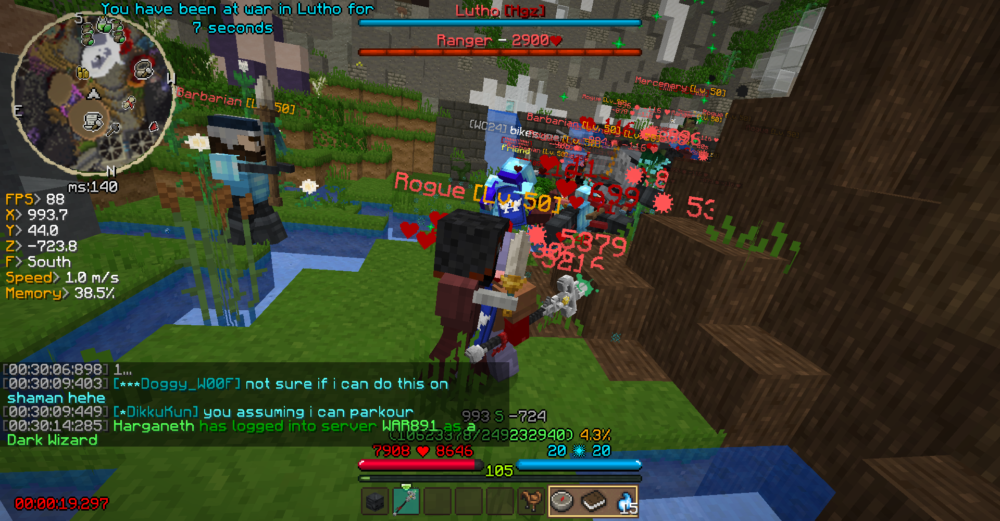
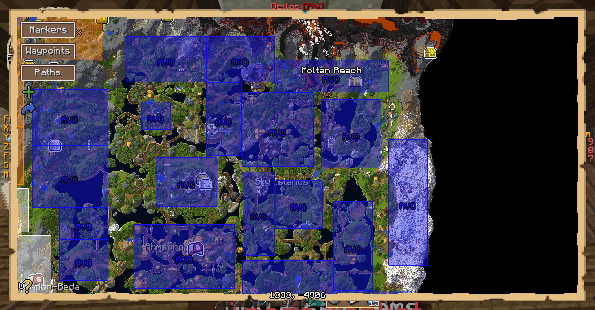
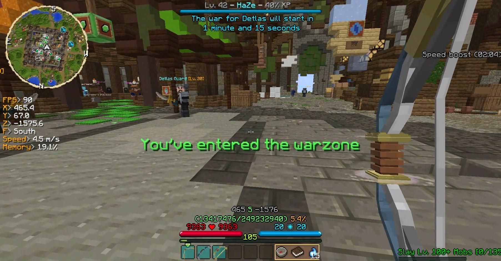
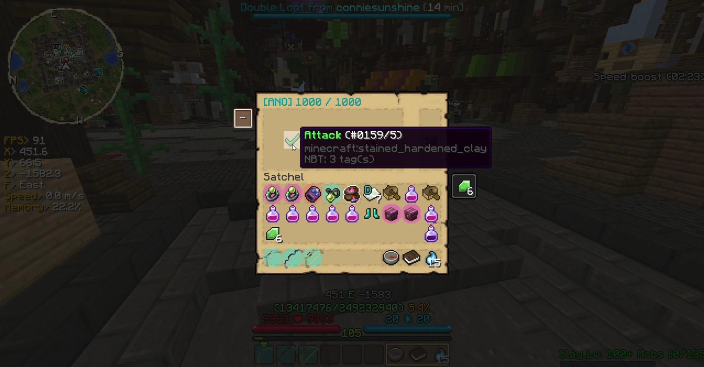

What is a war?
A war consists of killing up to 1000 mobs who are usually level 50.
When all of the mobs have been killed you take control of the territory.
Territories
The Wynncraft map is divided into territories such as the ones shown in the image.
Maps like the one in the image can be found on Wynntils (A Minecraft mod) Wynndata and Wynncraft's Website if you tick the "Show territorries box".
Wars are about taking control of these territories, which gives the guild part of the XP and emeralds dropped in the territory.
Joining a war
To join a war you have to be in the territory that was attacked when the timer runs out.
Which territory was attack will be shown in the attack message in the chat and if you you Wynntils it will also be displayed at the top of the screen.
To know where the territories are you can use one of the maps mentioned in Territories.
If you don't use Wynntils you can follow your compass to get to the warzone.
Attacking
Captains or higher can attack a territory using the command /gu attack, which will prompt the menu shown in the image.
This menu shows which guild currently owns the territory and how many mobs they have defended, in this case ANO owns the territory and they have defended 1000 mobs

When you select Attack in the menu 5 different timers will show up. The 1:30m timer is generally the only timer used and it means that the war will start 1 minute and 30 seconds after the timer has been clicked.
Defending
Captains and higher can use the command /gu defend, which brings up the menu shown in the video.
The defense shown in the video is the standard defense, usually referred to as a "filler defense".
The filler defense consists of:
- 300 Lv. 50 Rangers
- 300 Lv. 50 Mercenaries
- 300 Lv. 50 Rogues
- 100 Lv. 50 Barbarians
Paths
A big part of warring is moving from territory to territory, here are a few paths you can follow for some of the more difficult territories.
Cinfras to Hive
Download link: cinfhive.json
Cinfras to Thesead
Download link: cinfthes.json
Hive to Thesead
Download link: hivethes.json
Thesead to Lava Lake Bridge
Download link: thesllb.json
Molten Reach to Raider's Base Lower
Download link: mrrbl.json